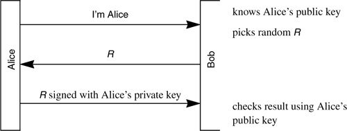
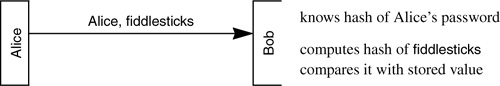
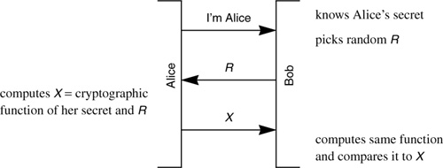

Networking Security Networking Security Networking Security Security Networking Security Networking Security Networking Charlie Kaufman Radia Perlman Mike Speciner Prentice Hall Network Security: Private Communication in a Public World, Second Edition
9.6. Eavesdropping and Server Database Reading
Public key technology makes it easy to do authentication in a way that is both secure from eavesdropping and from an intruder reading the server database. Alice knows her own private key. Bob stores Alice's public key. An intruder who reads Bob's database (and therefore obtains Alice's public key) will not be able to use the information to impersonate Alice. Authentication is done by Alice using her private key to perform a cryptographic operation on a value Bob supplies, and then transmitting the result to Bob. Bob checks the result using Alice's public key.

Without public key cryptography, it's difficult to protect against both eavesdropping and server database reading with a single protocol, although it is easy to do one or the other. For instance, let's try a protocol such as is used when a person logs into a system such as UNIX. Bob (the computer authenticating the user Alice) stores a hash of Alice's password. Let's say Alice's password is fiddlesticks. In this protocol someone, say Trudy, who accessed Bob's database would not be able to impersonate Alice. She could do an off-line password-guessing attack if she were to obtain Alice's hashed password from Bob's database, but that would not help her if Alice had chosen a good password. But if Trudy were to eavesdrop when Alice was proving her identity to Bob, Trudy would obtain Alice's password. So this protocol is secure against server database disclosure but not against eavesdropping.

Now consider another protocol (see below). Let's assume that Bob stores Alice's actual secret. In this case Trudy, if she were to eavesdrop, would not be able to obtain information to allow her to impersonate Alice (except by an off-line password-guessing attack). But if she were to read Bob's database, she'd obtain Alice's secret. We'd almost claim it was impossible to simultaneously protect against eavesdropping and server database disclosure without using public key cryptography. However, an elegant protocol invented by Leslie Lamport can claim to accomplish this feat. Lamport's scheme does have a serious drawback, though. A user can only be authenticated a small finite number of times (such as 1000) before it is necessary to reinstall the user's information at the server; that is, someone with privileges at the server and knowledge of the user's password must reconfigure the server with the user's security information. Phil Karn has implemented Lamport's scheme in his S/Key software, and it is being used in the Internet. Lamport's scheme is described in §12.2 Lamport's Hash.

 |